Chapter 6 Raincloud and Forest Plots
Please load these three packages to go through the chapter.
library(tidyverse)
library(cowplot)
library(smplot2)6.1 Raincloud plot
A raincloud plot shows the raw data, probability density and summary statistics such as the median, quantiles etc by presenting individual data, a violin plot and a boxplot together.
It might be appealing to present all these components simultaneously to ensure that the data are shown transparently. However, whether this is truly necessary in the field of psychological/neuroscience research has not been entirely resolved because showing all at the same time can be visually overwhelming.
Nevertheless, I have decided to create a function sm_raincloud(). It is flexible and enables users to fine-control the aesthetics of the raincloud plot. I will leave it up to users to decide whether using raincloud is appropriate. Most importantly, this can depend on the type and nature of data set that is used.
Let’s generate random data to explore this function.
set.seed(211) # generate random data
group1 = abs(rnorm(20,2.5,1))
group2 = abs(rnorm(20,5,1))
Subject <- rep(paste0('S',seq(1:20)), 2)
Data <- data.frame(Value = matrix(c(group1,group2),ncol=1))
Group <- rep(c('Group 1', 'Group 2'), each = length(group1))
df <- cbind(Subject, Data, Group)In this data set, there are two distinct groups.
ggplot(data = df, mapping = aes(x = Group, y = Value, fill = Group)) +
sm_raincloud() +
scale_fill_manual(values = sm_color('blue','orange'))
The default of the individual points’ shape is 21, which is circle with borders. Therefore fill parameter has to be specified to change the filling colors.
After removing the defaults from smplot2 by including xxx.param = list(), you can set the color of all visual components by setting color = 'black' as a generic parameter. Note that the boxplot and violin have both fill and color parameters. When color = 'black' is included as a generic parameter, shape of the point becomes 16 because the default of smplot2 is overridden. Therefore, now that the point has no border, color affects the filling color rather than fill.
ggplot(data = df, mapping = aes(x = Group, y = Value, color = Group)) +
sm_raincloud(color = 'black', point.params = list(),
boxplot.params = list(),
violin.params = list()) 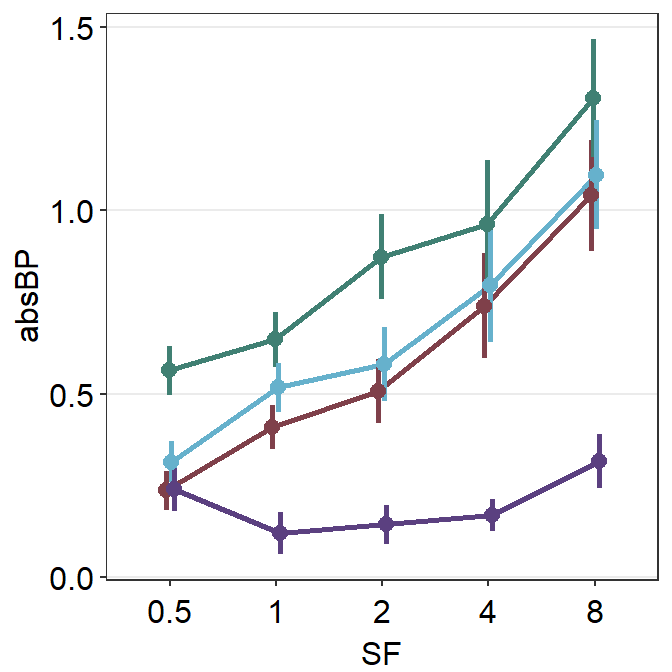
The limitation of this function is that you cannot assign unique to the boxplot for each group using scale_color_manual(). We can test this using the script below.
ggplot(data = df, mapping = aes(x = Group, y = Value, color = Group)) +
sm_raincloud(point.params = list(),
boxplot.params = list(),
violin.params = list()) +
scale_color_manual(values = sm_color('blue','orange')) 
In this example, the color affects the border color of the violin. However, the boxplot’s line color is still black even with scale_color_manual().
ggplot(data = df, mapping = aes(x = Group, y = Value, fill = Group)) +
sm_raincloud(point.params = list(),
boxplot.params = list(),
violin.params = list()) +
scale_fill_manual(values = sm_color('blue','orange')) 
In this example, the fill affects the filling color of the violin but not points.
In most cases, users might not need to manually tweak the defaults of smplot2. This is the default appearance with two custom colors darkred and viridian.
ggplot(data = df, mapping = aes(x = Group, y = Value, fill = Group)) +
sm_raincloud() +
scale_fill_manual(values = sm_color('darkred','viridian'))
Notice that there is an outlier in Group 2. The black circle at the top that is aligned to the top viridian point indicates that the viridian point is an outlier. This option of indicating outlier can be removed setting boxplot.params = list(outlier.shape = NA).
ggplot(data = df, mapping = aes(x = Group, y = Value, fill = Group)) +
sm_raincloud(boxplot.params = list(outlier.shape = NA)) +
scale_fill_manual(values = sm_color('darkred','viridian'))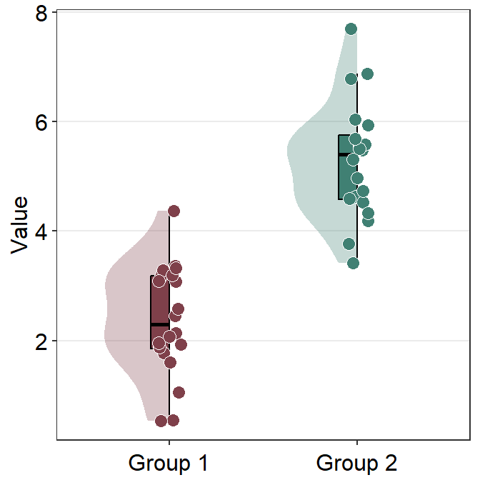
To truly modify each component of the raincloud plot that is generated using sm_raincloud(), you have to understand these xxx.param = list():
boxplot.paramsfeeds arguments togeom_half_boxplot()(almost identical togeom_boxplot()) to plot the boxplot with specifiedcolor,fill,outlier.shapeetc.violin.paramsfeeds arguments togeom_half_violin()(almost identical togeom_violin()) to plot the violin plot with specifiedcolor,alphaandfill, etcpoint.paramsfeeds arguments togeom_point()to plot the points in the shadow with specifiedcolor,fill,size,shapeandalpha.
6.1.1 Changing the x-axis labels
Note that the x-axis title is Group and the x-axis tick also says Group 1 and Group 2, making the labels repetitive. Therefore we can consider to modify the tick labels as One and Two using scale_x_discrete().
ggplot(data = df, mapping = aes(x = Group, y = Value, fill = Group)) +
sm_raincloud(boxplot.params = list(outlier.shape = NA)) +
scale_fill_manual(values = sm_color('darkred','viridian')) +
scale_x_discrete(labels = c('One', 'Two'))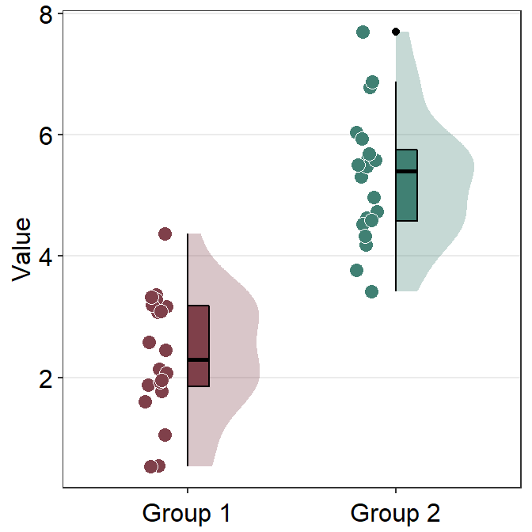
Note that in smplot, scale_x_continous() was used to modify the label at each x level. In smplot2, scale_x_discrete() is used instead because sm_raincloud() keeps the x-axis discrete rather than forcibly converting it to becoming continuous.
scale_x_discrete() is used here because the data frame that is used to plot the data has categorical x variables as shown below.
df$Group## [1] "Group 1" "Group 1" "Group 1" "Group 1" "Group 1" "Group 1"
## [7] "Group 1" "Group 1" "Group 1" "Group 1" "Group 1" "Group 1"
## [13] "Group 1" "Group 1" "Group 1" "Group 1" "Group 1" "Group 1"
## [19] "Group 1" "Group 1" "Group 2" "Group 2" "Group 2" "Group 2"
## [25] "Group 2" "Group 2" "Group 2" "Group 2" "Group 2" "Group 2"
## [31] "Group 2" "Group 2" "Group 2" "Group 2" "Group 2" "Group 2"
## [37] "Group 2" "Group 2" "Group 2" "Group 2"This shows that df$Group is discrete and has two unique levels.
unique(df$Group)## [1] "Group 1" "Group 2"Instead of changing the x-tick label, we can remove the x-axis title instead by writing theme(axis.title.x = element_blank()).
ggplot(data = df, mapping = aes(x = Group, y = Value, fill = Group)) +
sm_raincloud(boxplot.params = list(outlier.shape = NA)) +
scale_fill_manual(values = sm_color('darkred','viridian')) +
theme(axis.title.x = element_blank())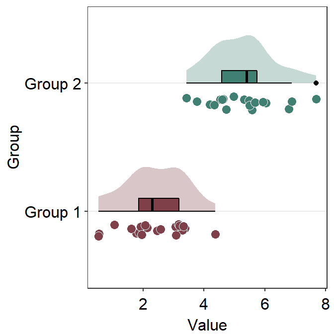
6.1.2 Separating the components and configuration
sm_raincloud() has an interesting parameter sep_level. It enables users to separate components of the raincloud plot. It is a reduced word of separation level and has a range between 0 and 4.
When sep_level = 0, all components are overlapped. If sep_level = 4, all components are separated. The default of sm_raincloud() is set to sep_level = 2.
ggplot(data = df, mapping = aes(x = Group, y = Value, fill = Group)) +
sm_raincloud(boxplot.params = list(outlier.shape = NA),
sep_level = 0) +
scale_fill_manual(values = sm_color('darkred','viridian')) +
theme(axis.title.x = element_blank())ggplot(data = df, mapping = aes(x = Group, y = Value, fill = Group)) +
sm_raincloud(boxplot.params = list(outlier.shape = NA),
sep_level = 4) +
scale_fill_manual(values = sm_color('darkred','viridian')) +
theme(axis.title.x = element_blank())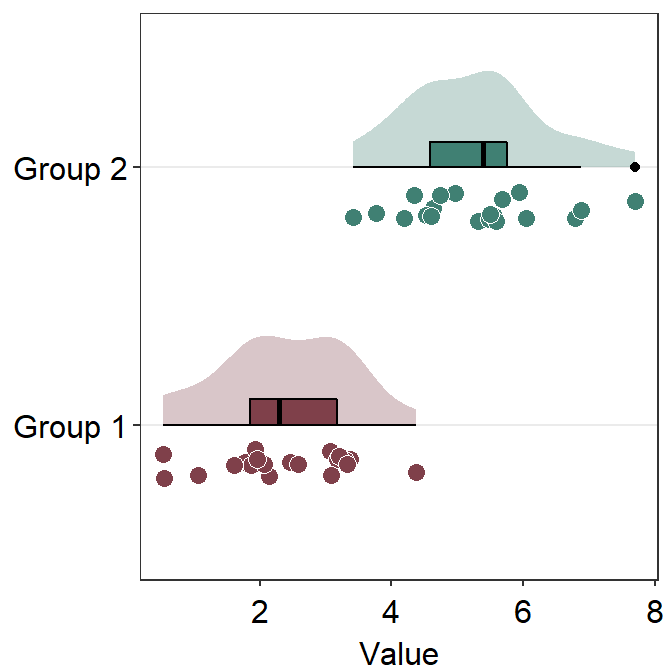
You also change the configuration of the raincloud plot so that it faces to the left rather than to the right using the argument which_side.
which_sidecontrols the configuration of the raincloud plot. It accepts'r'and'right'for right configuration (violin plot facing to the right), and'l'and'left'for left configuration.
ggplot(data = df, mapping = aes(x = Group, y = Value, fill = Group)) +
sm_raincloud(boxplot.params = list(outlier.shape = NA),
sep_level = 0,
which_side = 'l') +
scale_fill_manual(values = sm_color('darkred','viridian')) +
theme(axis.title.x = element_blank())
6.1.3 Changng the theme and orientation
sm_raincloud() uses sm_hgrid() automatically and receives legends and borders as arguments as all other visualizing functions of smplot2.
ggplot(data = df, mapping = aes(x = Group, y = Value, fill = Group)) +
sm_raincloud() +
scale_fill_manual(values = sm_color('darkred','viridian')) +
theme(axis.title.x = element_blank())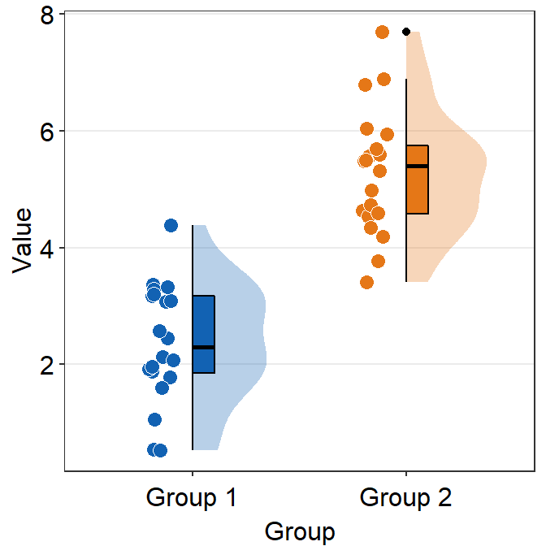
We can remove the borders by setting borders = FALSE.
ggplot(data = df, mapping = aes(x = Group, y = Value, fill = Group)) +
sm_raincloud(borders = F) +
scale_fill_manual(values = sm_color('darkred','viridian')) +
theme(axis.title.x = element_blank()) 
Also, you can bypass sm_hgrid() by adding another theme, such as sm_minimal().
ggplot(data = df, mapping = aes(x = Group, y = Value, fill = Group)) +
sm_raincloud() +
scale_fill_manual(values = sm_color('darkred','viridian')) +
theme(axis.title.x = element_blank()) +
sm_minimal()
You can also change the orientation of the raincloud plot from vertical to horizontal by setting vertical = FALSE.
ggplot(data = df, mapping = aes(x = Group, y = Value, fill = Group)) +
sm_raincloud(vertical = FALSE) +
scale_fill_manual(values = sm_color('darkred','viridian')) 
We can remove the y-axis title of the plot by using theme(axis.title.y = element_blank()) instead theme(axis.title.x = element_blank()).
ggplot(data = df, mapping = aes(x = Group, y = Value, fill = Group)) +
sm_raincloud(vertical = FALSE) +
scale_fill_manual(values = sm_color('darkred','viridian')) +
theme(axis.title.y = element_blank()) 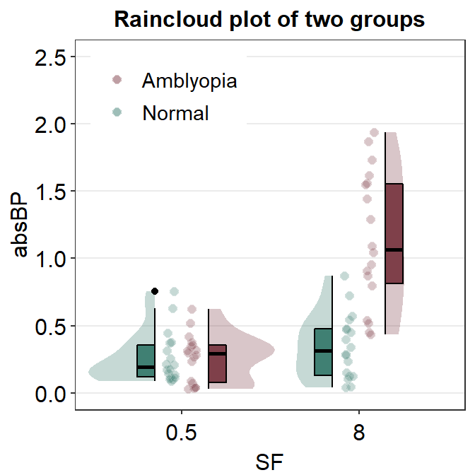
6.1.4 Raincloud plot with data from multiple groups
sm_raincloud() can also raincloud plots for data from multiple groups. Let’s load this fake data set.
df2 <- read_csv('https://www.smin95.com/amblyopia_random.csv')
df2a <- filter(df2, Condition == 'One')
df2a <- filter(df2, SF %in% c(0.5,8))
df2a$SF <- as.factor(df2a$SF)Make sure SF is converted to factor first because the x-scale has to be discrete, not continuous. In this example, we have filtered for SF that equals 0.5 or 8.
ggplot(data = df2a, mapping = aes(x = SF, y = absBP, fill = Group,
color = Group)) +
sm_raincloud(sep_level = 2) +
scale_fill_manual(values = sm_color('darkred','viridian')) 
We immediately see that the plot is extremely crowded because there are four violin plots, four boxplots and overlapping individual points.
We could still try to make it visually neat, however. In the upcoming approach, we will use two separate data frames, one for each group (Normal and Amblyopia).
df2amb <- filter(df2a, Group == 'Amblyopia')
df2norm <- filter(df2a, Group == 'Normal')Next we first plot the data from one of the data frames. Make sure that the first set of raincloud plot is faced slightly to the right using position_nudge().
ggplot(mapping = aes(x = SF, y = absBP, fill = Group)) +
sm_raincloud(data = df2amb, position = position_nudge(x = +0.3)) +
scale_fill_manual(values = sm_color('darkred')) 
Next, we plot the viridian (Normal) data on the figure which left configuration.
ggplot(mapping = aes(x = SF, y = absBP, fill = Group)) +
sm_raincloud(data = df2amb, position = position_nudge(x = +0.15),
point.params = list(size = 3, shape = 21,
color = 'transparent', alpha = 0.4,
position = sdamr::position_jitternudge(nudge.x = 0.06,
jitter.width = 0.06))) +
scale_fill_manual(values = sm_color('darkred', 'viridian')) +
sm_raincloud(data = df2norm, which_side = 'left',
position = position_nudge(x = -0.15),
point.params = list(size = 3, shape = 21,
color = 'transparent', alpha = 0.4,
position = sdamr::position_jitternudge(nudge.x = -0.06,
jitter.width = 0.06)))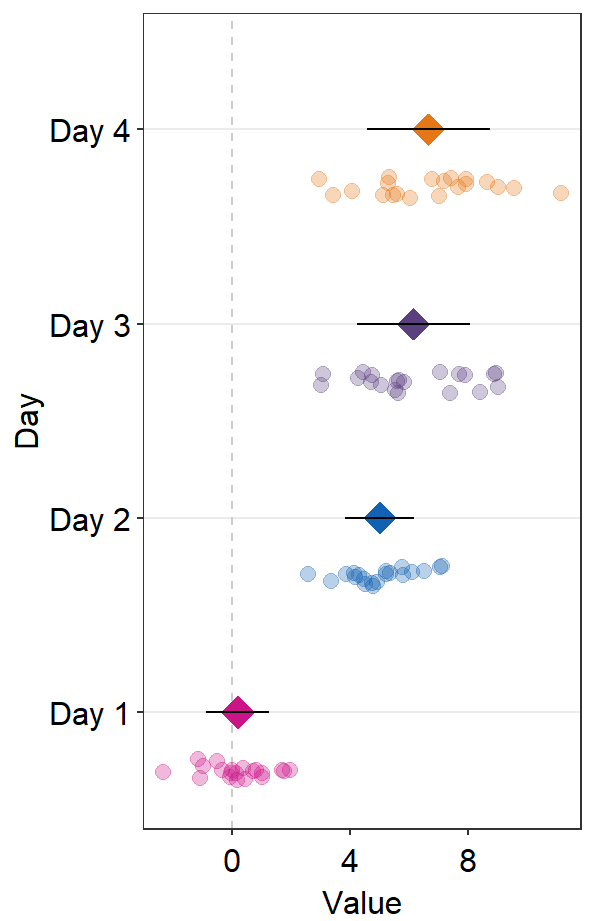
I think this attempt is somewhat acceptable. Let’s improve the aesthetics slightly by adjusting the size of the point and adding legends.
ggplot(mapping = aes(x = SF, y = absBP, fill = Group)) +
sm_raincloud(data = df2amb, position = position_nudge(x = +0.15),
show.legend = FALSE,
point.params = list(size = 2, shape = 21,
color = 'transparent',
show.legend = TRUE,
alpha = 0.3,
position = sdamr::position_jitternudge(nudge.x = 0.06, seed = 10,
jitter.width = 0.06))) +
scale_fill_manual(values = sm_color('darkred', 'viridian')) +
sm_raincloud(data = df2norm, which_side = 'left',
show.legend = FALSE,
position = position_nudge(x = -0.15),
point.params = list(size = 2, shape = 21,
show.legend = TRUE,
color = 'transparent', alpha = 0.3,
position = sdamr::position_jitternudge(nudge.x = -0.06, seed = 10,
jitter.width = 0.06))) +
theme(legend.position = c(0.24,0.85),
legend.title = element_blank(),
legend.text = element_text(size = 11)) +
ggtitle('Raincloud plot of two groups') +
scale_y_continuous(limits = c(0,2.5)) 
Another solution is to plot the raincloud plot for each group per panel, and put two panels together. In fact, I don’t recommend the reader to plot data of multiple groups within the same figure when drawing a raincloud plot.
Exercise: By using this script above with some minor changes, you can also generate boxplot (sm_boxplot()) and violin (sm_violin()) using data from multiple groups. You can try them on your own.
6.2 Forest plot
A forest plot is commonly known as a visualization method to summarise data across multiple studies or experiments. For this reason, it has been widely used in meta analysis studies that aim to summarise the results of tens or hundreds of studies into a few figures. I believe that forest plot’s usage can exceed beyond simple meta analysis, all the way to describing results from a single study with numerous experimental conditions.
Let’s generate some random data first and draw a forest plot using sm_forest() to explore what the function provides.
set.seed(2) # generate random data
day1 = rnorm(20,0,1)
day2 = rnorm(20,5,1)
day3 = rnorm(20,6,1.5)
day4 = rnorm(20,7,2)
Subject <- rep(paste0('S',seq(1:20)), 4)
Data <- data.frame(Value = matrix(c(day1,day2,day3,day4),ncol=1))
Day <- rep(c('Day 1', 'Day 2', 'Day 3', 'Day 4'), each = length(day1))
df2 <- cbind(Subject, Data, Day)When using sm_forest(), x is required to be a continuous variable. y should be a categorical variable (i.e., factor).
ggplot(data = df2, aes(x = Value, y = Day, color = Day)) +
sm_forest() 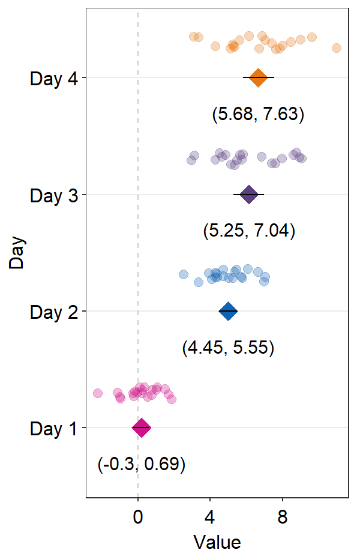
sm_forest() has various xxx.params arguments as well as ... generic parameter to control the aesthetics across various components of the plot.
avgPoint.paramssends arguments togeom_point()to plot the average point with specifiedcolor,fill,size,shapeandalpha.err.params = list()sends arguments, such ascolor, togeom_linerange()to plot the error bar.point.params = list()sends arguments, such ascolor,fill, andalphatogeom_point()to plot the individual points.refLine.params = list()sends arguments, such ascolorandsizetogeom_vline()to plot the reference line.
We can reset all the defaults by listing these parameters as xxx.params = list().
ggplot(data = df2, aes(x = Value, y = Day, color = Day)) +
sm_forest(avgPoint.params = list(),
err.params = list(),
point.params = list())
Let’s restore the defaults and change colors now using scale_color_manual().
ggplot(data = df2, aes(x = Value, y = Day, color = Day)) +
sm_forest() +
scale_color_manual(values = sm_palette(4))
These points could be jittered (point_jitter_width) and increase the separation level between the average point and the individual points (sep_level), which has no limited range as opposed to 0-4 in sm_raincloud().
ggplot(data = df2, aes(x = Value, y = Day, color = Day)) +
sm_forest(point_jitter_width = 0.12, sep_level = 3) +
scale_color_manual(values = sm_palette(4))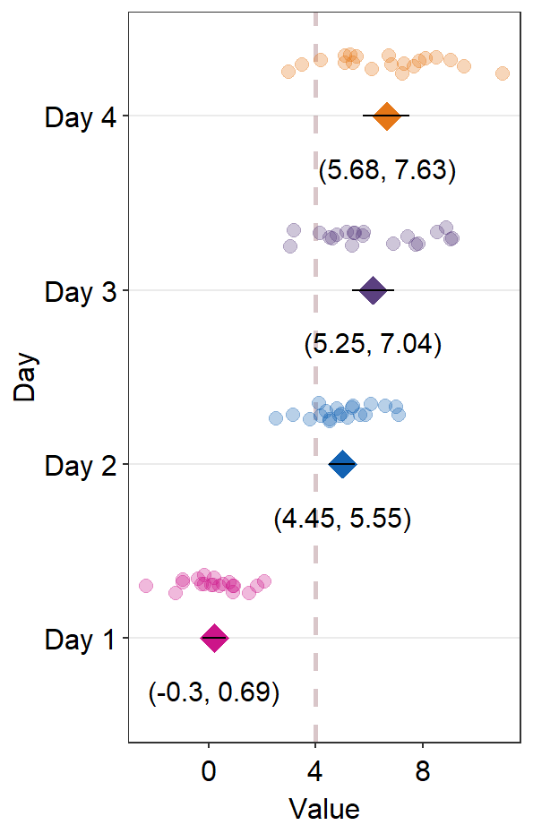
If sep_level is positive, the average point is above the individual points. If sep_level is negative, then the average point is below the individual points.
ggplot(data = df2, aes(x = Value, y = Day, color = Day)) +
sm_forest(point_jitter_width = 0.12, sep_level = -3) +
scale_color_manual(values = sm_palette(4))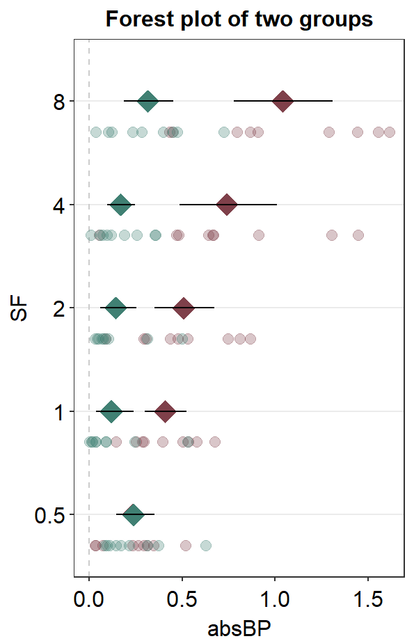
The default error bar type is 95% confidence interval (errorbar_type = 'ci'). You can change it to either standard error ('se') or standard deviation ('sd'). Here is standard deviation.
ggplot(data = df2, aes(x = Value, y = Day, color = Day)) +
sm_forest(point_jitter_width = 0.12, sep_level = 3,
errorbar_type = 'sd') +
scale_color_manual(values = sm_palette(4))
A common practice is to annotate the error range (95% confidence interval) in text on on the forest plot. This could be done using sm_forest_annot().
ggplot(data = df2, aes(x = Value, y = Day, color = Day)) +
sm_forest(point_jitter_width = 0.12, sep_level = 3) +
scale_color_manual(values = sm_palette(4)) +
sm_forest_annot(data = df2, x = Value, y = Day, sep_level = 3)
sm_forest_annot() has various arguments. These arguments should be identical to what you have provided ggplot(data = ..., aes(x = ..., y = ...).
The
dataargument requires the variable that stores the data frame that is used to plot the data, which isdf2in this example.xargument is the variable that is plotted along the x-axis.yargument is the variable that is plotted along the y-axis.
Also, there are some additional arguments.
sep_levelrefers to the separation level between the text annotation and the average point. If it is positive, the text will be above the mean point. In practice, put the same value ofsep_levelin bothsm_forest()andsm_forest_annot(). The default issep_level = 2, which is also found insm_forest().errorbar_typerefers to the type of error by which the text annotation should be written. In practice, put the same argument ofsep_levelin bothsm_forest()andsm_forest_annot(). The default is set to confidence interval (errorbar_type = 'ci').text.paramsfeeds arguments togeom_text()to set the aesthetics of the texts such ascolorandsize.
We can try sep_level = -3 across sm_forest() and sm_forest_annot() to see what happens.
ggplot(data = df2, aes(x = Value, y = Day, color = Day)) +
sm_forest(point_jitter_width = 0.12, sep_level = -3) +
scale_color_manual(values = sm_palette(4)) +
sm_forest_annot(data = df2, x = Value, y = Day, sep_level = -3)We see that the positions of the individual points and texts have been flipped in relation to the average points.
You can also draw a vertical reference line by setting refLine = TRUE.
ggplot(data = df2, aes(x = Value, y = Day, color = Day)) +
sm_forest(point_jitter_width = 0.12, sep_level = -3,
refLine = TRUE) +
scale_color_manual(values = sm_palette(4)) +
sm_forest_annot(data = df2, x = Value, y = Day, sep_level = -3)
We could change the reference line’s location using the argument xintercept.
ggplot(data = df2, aes(x = Value, y = Day, color = Day)) +
sm_forest(point_jitter_width = 0.12, sep_level = -3,
refLine = TRUE,
xintercept = 4) +
scale_color_manual(values = sm_palette(4)) +
sm_forest_annot(data = df2, x = Value, y = Day, sep_level = -3)We could change the aesthetics of the reference line using refLine.params.
ggplot(data = df2, aes(x = Value, y = Day, color = Day)) +
sm_forest(point_jitter_width = 0.12, sep_level = -3,
refLine = TRUE,
xintercept = 4,
ref.params = list(size = 1, alpha = 0.3,
color = sm_color('darkred'))) +
scale_color_manual(values = sm_palette(4)) +
sm_forest_annot(data = df2, x = Value, y = Day, sep_level = -3)
6.2.1 Plotting the forest plot using data of multiple groups
Plotting the forest plot using data of multiple groups is also possible with sm_forest(). To explore this feature, lets upload data from online.
df <- read_csv('https://www.smin95.com/amblyopia_random.csv')
df$SF <- as.factor(df$SF)
df1 <- filter(df, Condition == 'One') Now let’s plot these data using sm_forest(). Make sure that group the data for each group group = Group.
ggplot(df1, aes(x = absBP, y = SF, color = Group, group = Group)) +
sm_forest(sep_level = 3) +
scale_color_manual(values = sm_color('darkred', 'viridian')) +
ggtitle('Forest plot of two groups') 
We could also set the transparency of the points so that the alpha increases over SF.
ggplot(df1, aes(x = absBP, y = SF, color = Group, alpha = SF, group =Group)) +
sm_forest(sep_level = 3) +
scale_color_manual(values = sm_color('darkred', 'viridian')) +
scale_alpha_manual(values = c(0.3,0.5,0.7,0.85, 1)) +
ggtitle('Forest plot of two groups')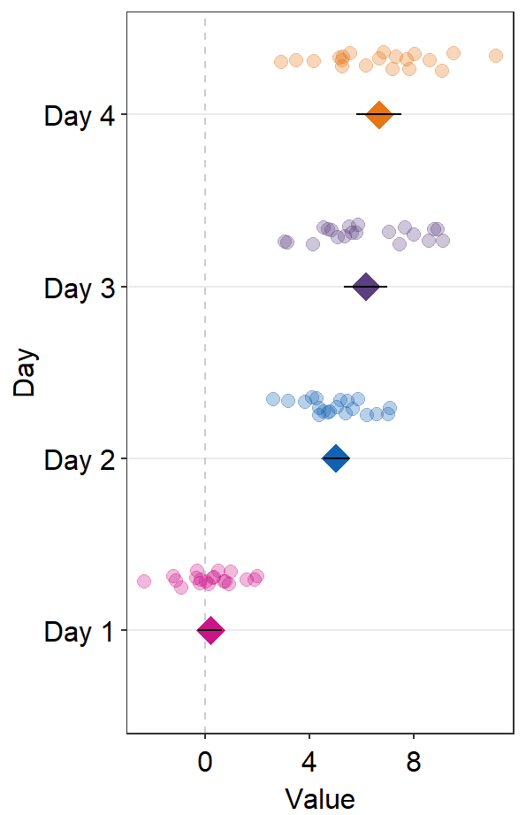
The issue with this plot is that the individual points are overlapped, as well as the mean points at 0.5 on the y-axis SF. You could use position_dodge() to dodge the position of one group to prevent the overlap.
ggplot(df1, aes(x = absBP, y = SF, color = Group, alpha = SF, group =Group)) +
sm_forest(sep_level = 3,
position = position_dodge(width = .8)) +
scale_color_manual(values = sm_color('darkred', 'viridian')) +
scale_alpha_manual(values = c(0.3,0.5,0.7,0.85, 1)) +
ggtitle('Forest plot of two groups')
As in sm_raincloud(), we could split the data frames into two and plot them separately.
df1amb <- filter(df1, Group == 'Amblyopia')
df1norm <- filter(df1, Group == 'Normal')We could plot each group separately using the two data frames. First, plot the Amblyopia group.
ggplot(mapping = aes(x = absBP, y = SF, color = Group, fill = Group)) +
sm_forest(data = df1amb) +
scale_color_manual(values = sm_color('darkred', 'viridian')) 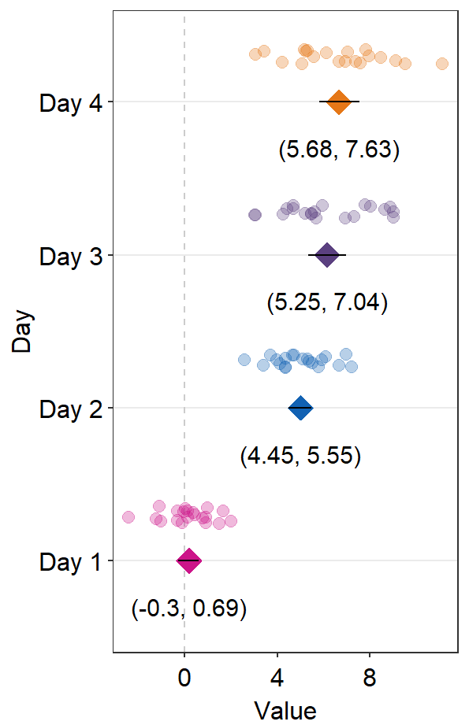
Next, apply position_nudge() to move all the components.
ggplot(mapping = aes(x = absBP, y = SF, color = Group, fill = Group)) +
sm_forest(data = df1amb, position = position_nudge(y = +0.25)) +
scale_color_manual(values = sm_color('darkred', 'viridian')) We see that sep_level = 2 no longer works when we apply position_nudge() here because sep_level also controls the position of the components using position_nudge(). We have bypassed its control by explicitly writing position_nudge(). Therefore, we will need to separate the points from the mean points manually by using point.params.
ggplot(mapping = aes(x = absBP, y = SF, color = Group, fill = Group)) +
sm_forest(data = df1amb, position = position_nudge(y = +0.4),
point.params = list(size = 2,
show.legend = FALSE, alpha = 0.3,
position = position_nudge(y = 0.2))) +
scale_color_manual(values = sm_color('darkred', 'viridian')) Then, we can plot the data of Normal on top of the Amblyopia plot.
ggplot(mapping = aes(x = absBP, y = SF, color = Group, fill = Group)) +
sm_forest(data = df1amb, position = position_nudge(y = +0.3),
point.params = list(size = 2, alpha = 0.3,
position = position_nudge(y = 0.1))) +
scale_color_manual(values = sm_color('darkred', 'viridian')) +
sm_forest(data = df1norm,
position = position_nudge(y = -0.3),
point.params = list(size = 2,
show.legend = FALSE, alpha = 0.3,
position = position_nudge(y = -0.1))) +
ggtitle('Forest plot of two groups') 
This looks acceptable. Another solution is to just remove the individual points altogether by setting sm_forest(points = FALSE). In this method, we do not need to split the data frame into two.
ggplot(df1, aes(x = absBP, y = SF, color = Group, alpha = SF, group = Group)) +
sm_forest(sep_level = 3,
position = position_dodge(width = .8), points = FALSE) +
scale_color_manual(values = sm_color('darkred', 'viridian')) +
scale_alpha_manual(values = c(0.3,0.5,0.7,0.85, 1)) +
ggtitle('Forest plot of two groups')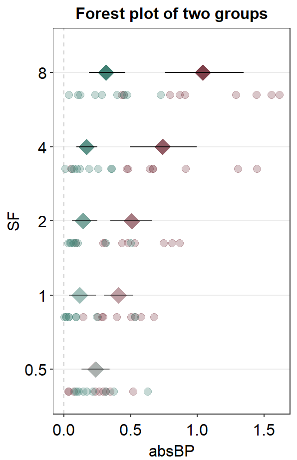
Also, sm_forest_annot() can be used to provide text annotations for the error range when presenting data of multiple groups. However, first, we will need to separate the two data frames as shown below for each group: Amblyopia and Normal.
df1amb <- filter(df1, Group == 'Amblyopia')
df1norm <- filter(df1, Group == 'Normal')Next, we will have to position_nudge for each annotation and group. There are five numbers that are provided in position_nudge(); the first one is for SF = 0.5, and the last one is for SF = 8.
ggplot(mapping = aes(x = absBP, y = SF, color = Group)) +
sm_forest(data = df1amb, position = position_nudge(y = +0.2),
points = FALSE) +
sm_forest_annot(data = df1amb, x = absBP, y = SF,
position = position_nudge(y = c(0.2,-0.2,-0.2,-0.2,-0.2),
x = c(0.4,0,0,0,0)),
text.params = list(color = sm_color('darkred'),
size = 3)) +
scale_color_manual(values = sm_color('darkred', 'viridian')) +
sm_forest(data = df1norm,
position = position_nudge(y = -0.2),
points = FALSE) +
sm_forest_annot(data = df1norm, x = absBP, y = SF,
position = position_nudge(y = c(-0.18,0.2,0.2,0.2,0.2),
x = c(0.4, 0, 0, 0,0)),
text.params = list(color = sm_color('viridian'),
size = 3)) +
ggtitle('Forest plot of two groups')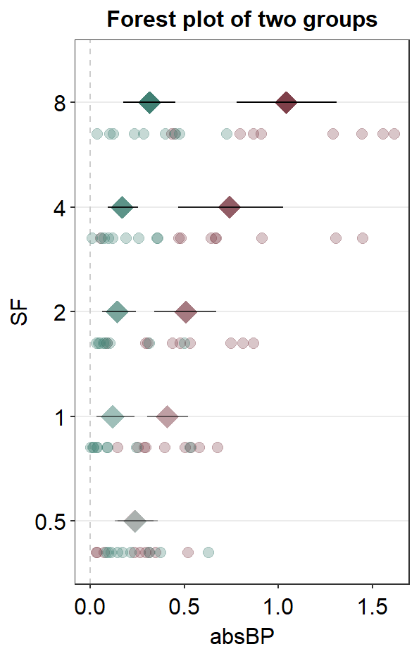
Here is the forest plot with data from multiple groups with text annotations but without individual points. As you may realize, text annotations can be extremely tedious so much so that I personally think using Adobe Illustrator might be better in this case.